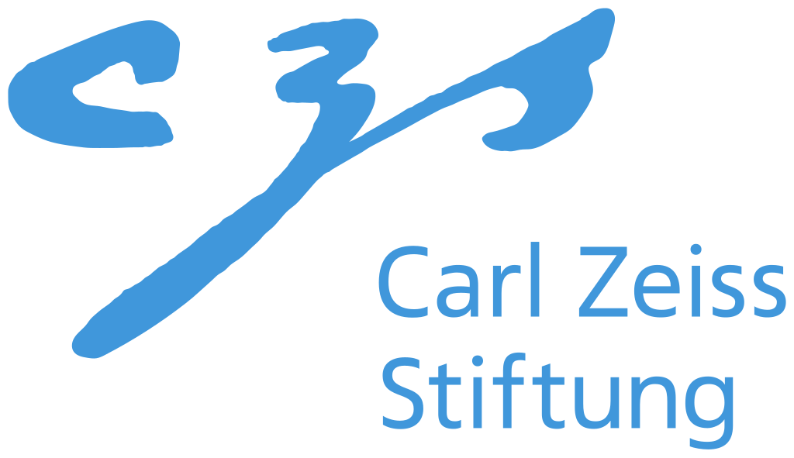
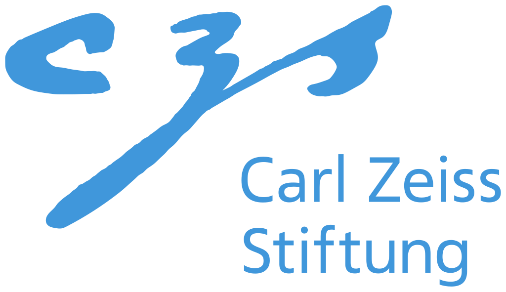

Current and Upcoming Projects
Optimal Control and Optimal Experimental Design for MRI and Photoacoustic Imaging
(MBAI)

Start: 2022-04-01
End: 2028-03-31
Principal Investigators: Roland Herzog, Robert Scheichl
Staff: Karina Koval
Funded by:
Carl Zeiss Foundation
within the
CZS Breakthroughs funding scheme
Part of: Model-Based AI: Physical Models and Deep Learning for Imaging and Cancer Treatment

Start: 2022-04-01
End: 2028-03-31
Principal Investigators: Roland Herzog, Robert Scheichl
Staff: Karina Koval
Funded by: Carl Zeiss Foundation within the CZS Breakthroughs funding scheme
Part of: Model-Based AI: Physical Models and Deep Learning for Imaging and Cancer Treatment
End: 2028-03-31
Principal Investigators: Roland Herzog, Robert Scheichl
Staff: Karina Koval
Funded by: Carl Zeiss Foundation within the CZS Breakthroughs funding scheme
Part of: Model-Based AI: Physical Models and Deep Learning for Imaging and Cancer Treatment
Recent Completed Projects
Latest Publications
-
Non-intrusive optimal experimental design for large-scale nonlinear Bayesian inverse problems using a Bayesian approximation error approachJournal of Scientific Computing 104(3), 2025
bibtex
@ARTICLE{KovalNicholson:2025:1, AUTHOR = {Koval, Karina and Nicholson, Ruanui}, PUBLISHER = {Springer Science and Business Media LLC}, DATE = {2025-08}, DOI = {10.1007/s10915-025-03008-7}, EPRINT = {2405.07412}, EPRINTTYPE = {arXiv}, JOURNALTITLE = {Journal of Scientific Computing}, NUMBER = {3}, TITLE = {Non-intrusive optimal experimental design for large-scale nonlinear Bayesian inverse problems using a Bayesian approximation error approach}, VOLUME = {104}, } -
Subspace accelerated measure transport methods for fast and scalable sequential experimental design, with application to photoacoustic imaging,
2025
bibtex
@ONLINE{CuiKovalHerzogScheichl:2025:1, AUTHOR = {Cui, Tiangang and Koval, Karina and Herzog, Roland and Scheichl, Robert}, DATE = {2025-02}, EPRINT = {2502.20086}, EPRINTTYPE = {arXiv}, TITLE = {Subspace accelerated measure transport methods for fast and scalable sequential experimental design, with application to photoacoustic imaging}, } -
Tractable optimal experimental design using transport mapsInverse Problems 40(12), 2024
bibtex
@ARTICLE{KovalHerzogScheichl:2024:2, AUTHOR = {Koval, Karina and Herzog, Roland and Scheichl, Robert}, PUBLISHER = {IOP Publishing}, DATE = {2024-10}, DOI = {10.1088/1361-6420/ad8260}, EPRINT = {2401.07971}, EPRINTTYPE = {arXiv}, JOURNALTITLE = {Inverse Problems}, NUMBER = {12}, PAGES = {125002}, TITLE = {Tractable optimal experimental design using transport maps}, VOLUME = {40}, }
Recent Teaching
-
2024 SSSelected Topics in Optimization (Seminar)